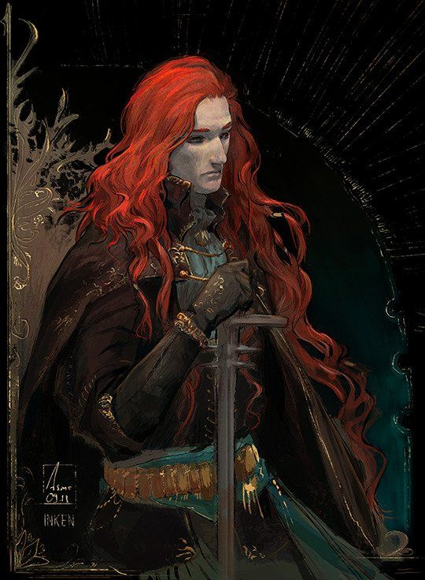
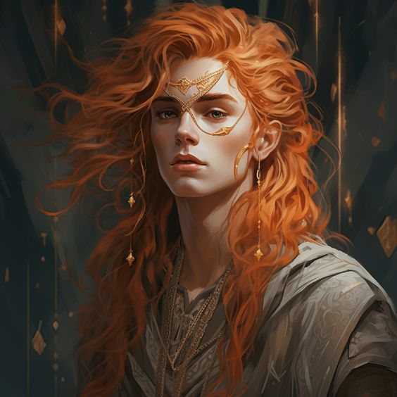

Gideon, el AlquimistaEn las vastas tierras de los amaneceres, Gideon se erguía como el faro que toda tortuosa noche iluminaba. Antaño, un noble caballero, entrelazó su destino con los misterios de la ciencia de la alquimia, catapultándose hacia la total notoriedad y al poder a causa de sus hazañas y heroicidades con la promesa de exorcizar a toda la oscuridad y magia que tanto daño había hecho a aquel mundo. Con su destreza inigualable con la espada y el arte alquímico, el pelirrojo encabezó las cruzadas contra las tierras ocuras y el yugo del Cénit Sombrío, siendo nombrado por las tierras del sur como monarca supremo durante la rebelión, siendo adorado y querido por partes iguales. Con sabiduría, nobleza y misterio, y junto a sus Diez Caballeros, las únicas personas permitidas a portar magia y líderes de la Orden dorada, creó un bastión contra la magia y la oscuridad en el oeste, nombrando tales tierras como La Tierra de los Amaneceres, contrastando así las sombras que ya engullían aquel mundo. Su imagen se convirtió en un faro de esperanza para aquellos que luchaban contra las sombras, y su nombre era pronunciado con reverencia y respeto en cada rincón. Su historia resonaba como un mito viviente, un relato de valentía y sacrificio que buscaba alimentaba las almas de su gente. Los Diez Caballeros, leales compañeros de Gideon, se convirtieron en leyendas por derecho propio. Cada uno poseía habilidades únicas y un fervor indomable por la causa. Juntos, formaban una fuerza imparable que protegía la Tierra de los Amaneceres de las garras de la oscuridad. El lazo entre el rey y sus caballeros era más que una simple alianza militar; era una fraternidad forjada en las llamas de la batalla y cimentada por un propósito común. Sin embargo, un fatídico día, Gideon fue gravemente herido durante una emboscada orquestada por los líderes del Cénit Sombrío. La luz que emanaba de Gideon, fue arrojadaa las sombras, y su impoluta imagen se vio obligada a ser 'exiliada' a la protección del Bastión Radiante, nombre por el cuál se conocía al castillo del reino. Dejó de verse, y los rumores comenzaron a esparcirse. Algunos seguían creyendo en su luz, ya que bien sabido era, o eso decía, que Gideon seguía reinando y tratando de brindar prosperidad a sus tierras desde el bastión. Sin embargo, otros decían que la herida que le habían hecho había vertido oscuridad en su alma, y que en los torreones del bastión ahora se gestaba una ambición insaciable. Donde Gideon, el Alquimista, rey de los amaneceres, se alzó como una figura titánica que desafiaba los límites de la realidad y la imaginación, ahora se postraba ante aquel mundo como una esquiva figura que dirigía las tierras del oeste desde las radiantes torres del Bastión, generando esperanza, rumores y sospechas por igual. |
||||||||||||
| Personalidad |
|---|
|

'El rey de los amaneceres'. Gideon era una figura de personalidad compleja y multifacética. En sus días de gloria, se destacaba como un líder valiente, noble y sabio. Su destreza con la espada y su dominio de la alquimia lo convirtieron en un héroe venerado y querido por su pueblo. El rey no tan solo solo era un líder militar, sino también un forjador de una fraternidad basada en un propósito común. Esta conexión profunda entre el rey y su gente, especialmente sus caballeros, iba más allá de una simple alianza, siendo el suyo un pueblo forjado en las llamas de la batalla. Sin embargo, cuando la tragedia de aquella fatídica noche golpeó los cimientos de las Tierras, aquella heróica y radiante figura comenzó a desvanecerse. Al dejarse de ver y las malas lenguas hablar, también lo hicieron sobre su estado físico y mental. Lo único que tenían de él, era el vigente recuerdo de sus cruzadas y batallas, pero todo era coronado por una derrota, cosa que pasaba por agua todo lo demás para algunos. |
| Historia |
|---|
Capitulo 1: Amanecer.

Gideon en su juventud. Las tierras de Fraegyr fueron bendecidas cuando La Espada del Límite, renombrado caballero del Cénit Oscuro y la Hija de Bosque tuvieron un hijo. No era la primera vez que el mundo humano y el del misticismo se unían para gestar algo hermoso, pero sí que era la primera vez que el nacimiento de un mestizo, hijo de un humano y una respetada druida, causó que tantos profetas comenzasen a hablar de lo muchísimo a lo que aquel niño aspiraba. Sin embargo, La espada y La hija querían mantener a su querido niño lejos de tales profecías. Querían que el pequeño creciese sano, fuerte y a salvo, y bien sabían que, en un mundo como aquel en el que viviían, aquello no haría más que atraer fuerzas con las que nadie podría lidiar. Fuerzas oscuras, malditas e hirientes. Por ese motivo, La Espada del Límite se alejó de ambos, permitiendo así que Gideon creciese bajo el amparo de las arboledas druídicas. Gideon creció entre los secretos susurrados por el viento entre las hojas y el canto de los pájaros que compartían sus susurros solo con aquellos dignos de escucharlos. La Hija de Bosque le enseñó los caminos de la magia antigua, conectándolo con las fuerzas de la naturaleza que fluían a su alrededor. Mas sin embargo, el pelirrojo nunca llegó a recibir la bendición de los bosques. A medida que Gideon crecía, también lo hacía su habilidad para manejar la espada que su padre le había legado antes de partir. Entre las sombras de los árboles ancestrales, practicaba sus habilidades, mezclando la destreza de un guerrero con la sabiduría de su madre. Y aunque intentaba mantenerse alejado del destino profetizado... la realidad del mundo terminó por encontrarle. |